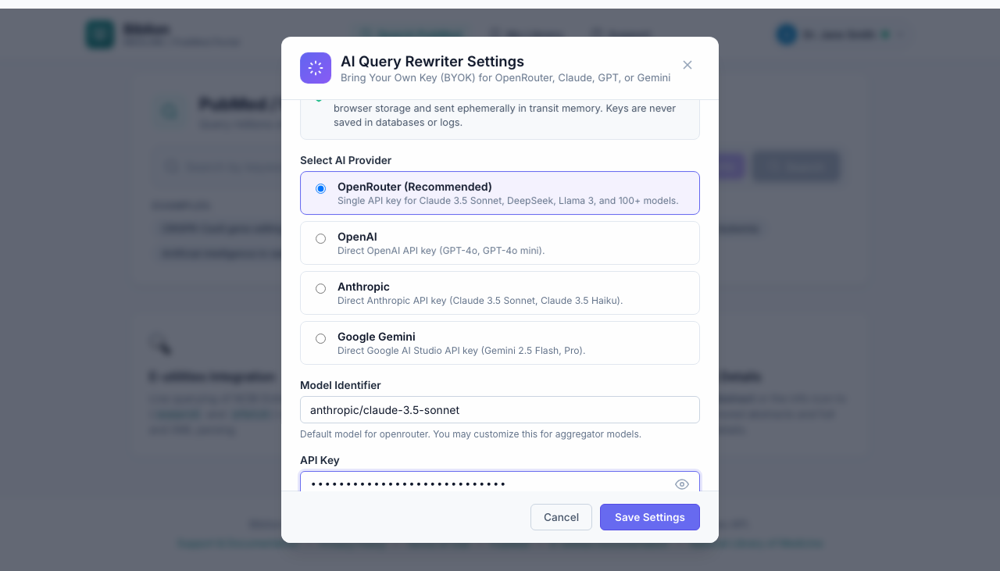
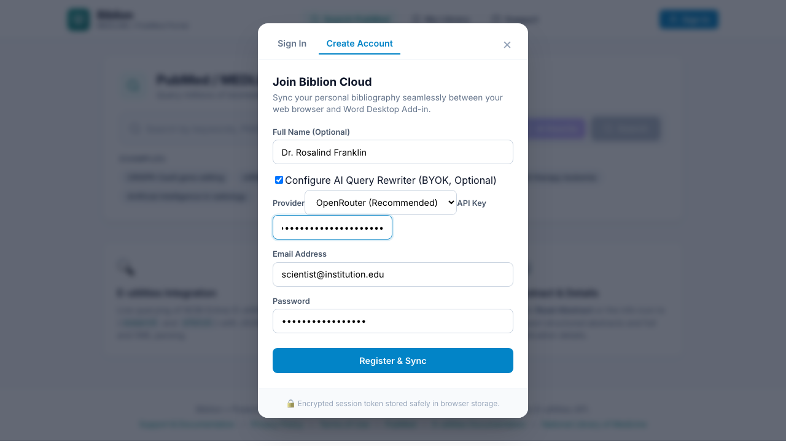
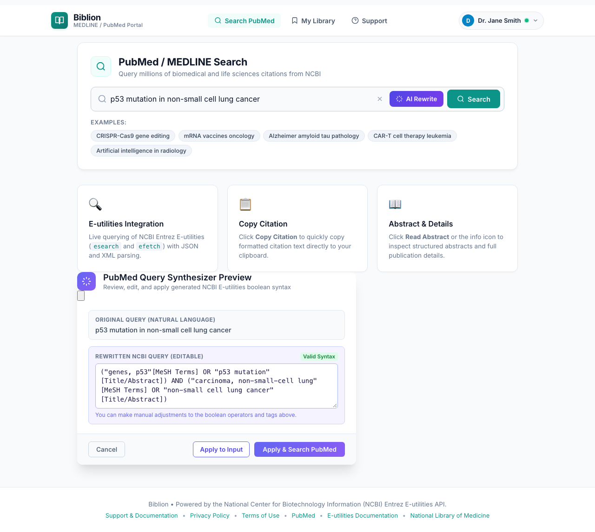
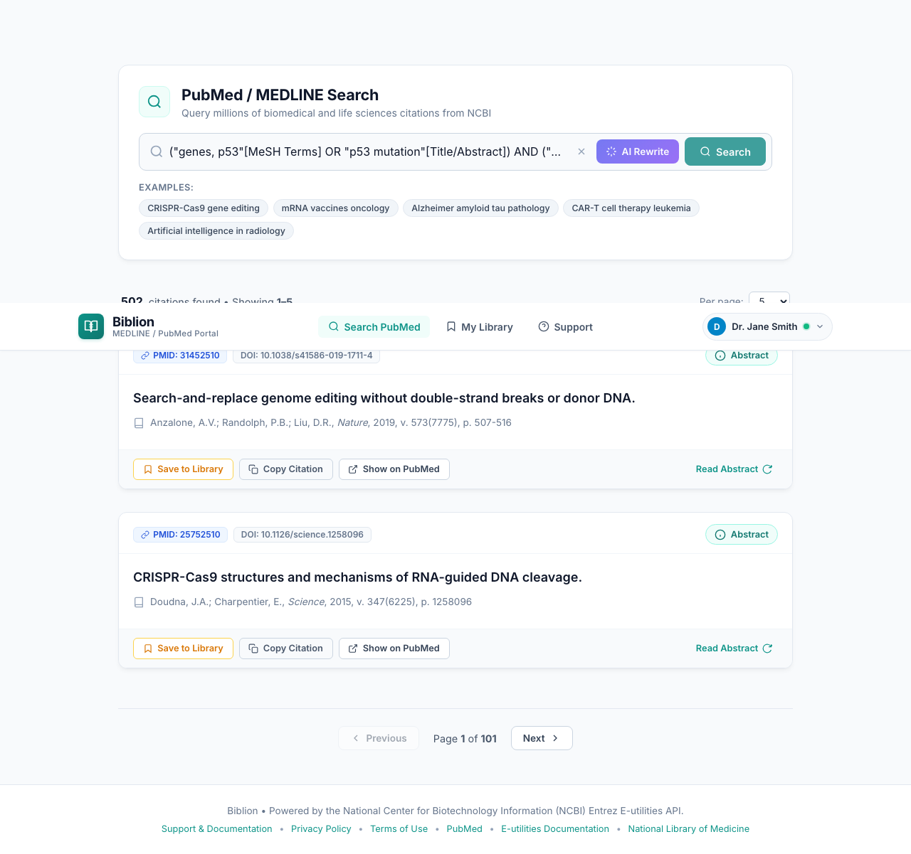
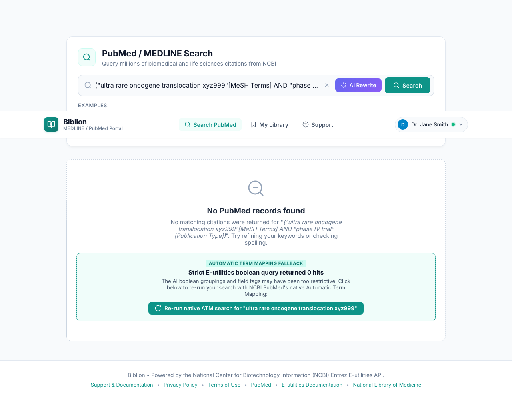
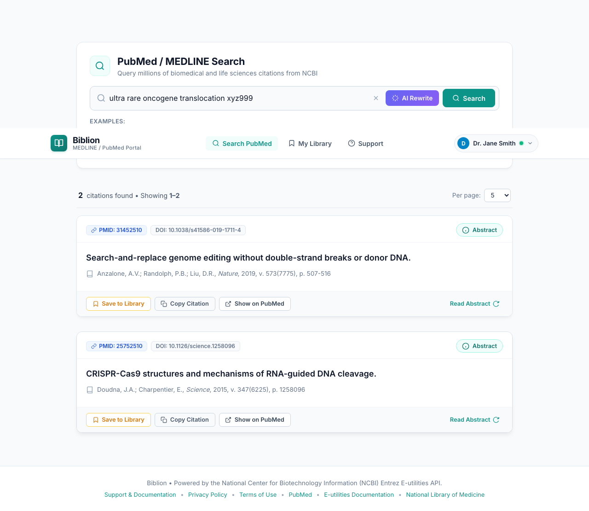
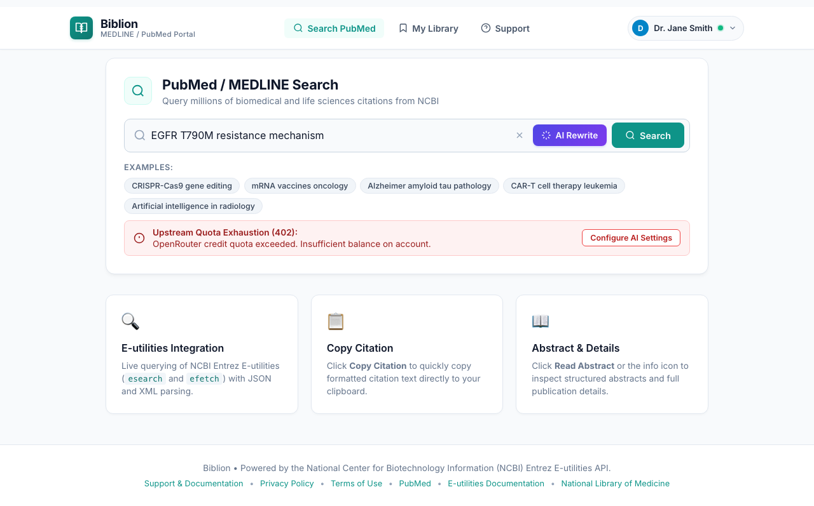
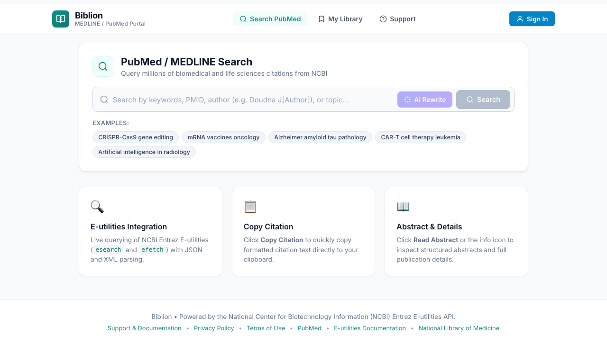

#AI Query Rewriter: Turn Plain-Language Questions into PubMed Searches
Product: Biblion Citation Assistant (AI feature)
Audience: Academic Researchers, Clinicians & Bioinformaticians
Requires: An OpenAI-compatible API key (your own). The feature is off by default.
Maintained by: Documentation Writer
#1. What It Does and Why You Would Use It
Good PubMed searches need boolean logic, MeSH headings and field tags such as [Title/Abstract]. The AI Query Rewriter converts a plain-language description into a well-formed PubMed query, and shows it to you before anything is searched.
Example
| You type | Biblion proposes |
|---|---|
heart attack aspirin | ("myocardial infarction"[MeSH Terms] OR "heart attack"[Title/Abstract]) AND ("aspirin"[MeSH Terms] OR "aspirin"[Title/Abstract]) |
Value to you: better recall (synonyms and MeSH terms you might forget), fewer irrelevant hits, and a reusable query you can read, edit and learn from. You stay in control: nothing is searched until you click apply.
#2. Bring Your Own Key (BYOK)
The rewriting runs entirely in your browser, from your browser straight to the AI provider. Biblion's servers never see, handle or log your API key. You need a key from an OpenAI-compatible provider — OpenAI itself, OpenRouter, a local vLLM server, and others all work, since you can point Biblion at a custom endpoint URL.
You pay your provider directly for usage, usually a tiny amount per query. The key is stored only in your browser session and is wiped when you sign out.
#3. Set Up (One Time)
- Open AI Settings (BYOK). In the account menu (click your name) it is listed as AI Settings (BYOK).
- In the AI Query Rewriter Settings dialog, tick Enable AI Query Rewriter.
- Paste your key into the OpenAI-Compatible API Key field (it is masked, placeholder
sk-...). - (Optional) Under Custom API Endpoint URL, change the endpoint if your provider is not OpenAI. The default is
https://api.openai.com/v1/chat/completions. - Click Save Settings.
The API key and endpoint fields stay disabled until the toggle is on.

Setting up while registering: the Create Account form has an optional section, Configure AI Query Rewriter (BYOK, Optional), where you can enable the feature and paste a key right away.

#4. Rewrite and Search
- On the Search page, type your question in the search box (e.g.
heart attack aspirin). - Click the AI Rewrite button (the wand icon) next to the search box. While it works it shows Rewriting....
- A dialog titled PubMed Query Synthesizer Preview opens, "Review, edit, and apply generated NCBI E-utilities boolean syntax". It shows:
- Original Query (Natural Language) — what you typed, and
- Rewritten NCBI Query (Editable) — the generated boolean query, with a Valid Syntax badge. You can edit the text directly.
- Choose an action:
- Apply to Input: puts the rewritten query in the search box without searching.
- Apply & Search PubMed: puts it in the search box and runs the search.
- Cancel: closes the preview.


#5. When the Rewritten Query Finds Nothing
An AI-written query can occasionally be too strict. If it returns zero results, Biblion shows an Automatic Term Mapping Fallback card: "The AI boolean groupings and field tags may have been too restrictive. Click below to re-run your search with NCBI PubMed's native Automatic Term Mapping." Click Re-run native ATM search for "…" to run your original text through PubMed's own Automatic Term Mapping instead.


#6. Troubleshooting
| Message | What it means | What to do |
|---|---|---|
| Upstream Quota Exhaustion (402): | Your AI provider says your balance or credits are used up. | Top up your provider account, then try again. Click Configure AI Settings to review your setup. |
| AI Query Rewriter Notice: | A general problem with the request (invalid key, unreachable endpoint, timeout). | Re-check the key and endpoint in AI Settings. |
| No AI API key configured | You clicked AI Rewrite before setting a key. | Open AI Settings, tick the toggle and paste your key. |

#7. Privacy & Security
- Your query text is sent from your browser to the endpoint you configured, under that provider's terms. Don't include confidential manuscript text in a query.
- Biblion's backend never receives or logs your API key.
- The key lives only in your browser session, and Sign Out wipes it from memory.

Related: Searching PubMed, Account & Sign-In